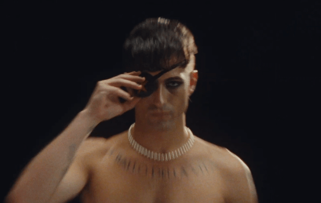

Måneskin Fanbase

Bienvenue sur un site fan de Måneskin
Sur ce site, tu pourras trouver différentes informations quant au groupe "Måneskin", nottament une discographie.
Pour acceder à toutes ces fonctionnalités, il te suffit d'aller dans la barre de navigation.
Nous vous invitons également à aller sur leur site officiel: maneskin.it
